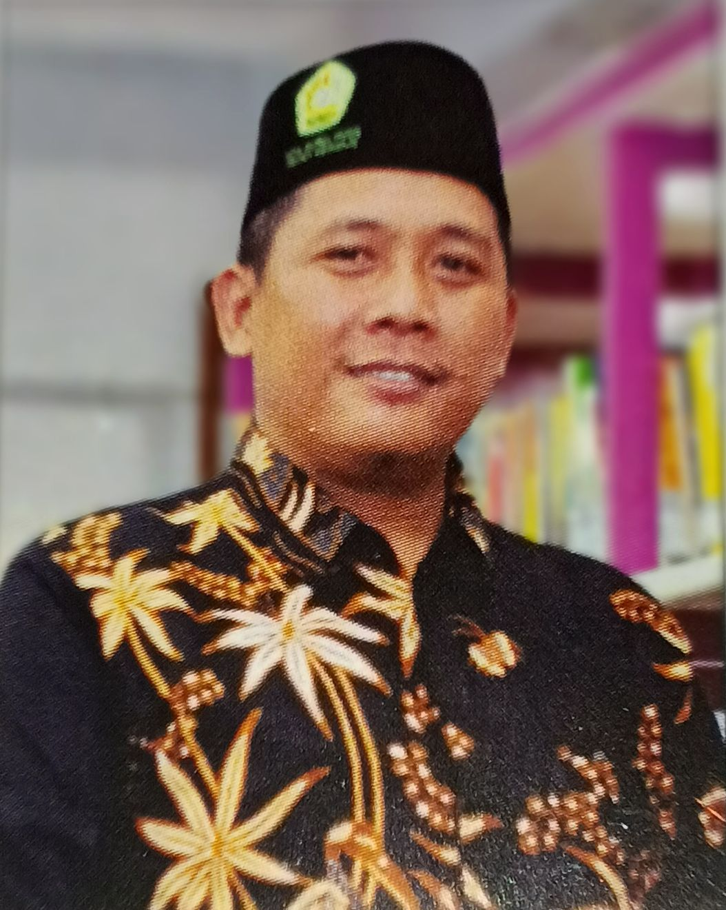

Kepala Sekolah MTs Nurul Huda Sedati
MTs. NURUL HUDA Sedati merupakan sebuah Madrasah Tsanawiyah Berakreditasi A yang terletak di Kota Sidoarjo Kecamatan Sedati tepatnya di Jl. Raya Kalangannyar Barat No. 53, Desa Kalanganyar, atau yang biasa disebut dengan Kampung Iwak. Di daerah terpencil Desa Kalanganyar terdapat Yayasan Pendidikan (YPI) yang diketuai langsung oleh KH. Turmudzi Huda dan MTs. NURUL HUDA Sedati ini pertama kali dibangun oleh KH. Faqih Abdulloh sejak Tahun 1978.
Terciptanya pembelajaran yang terintegrasi dengan
Adab, Sains, Technology, Religious, Art.
Beberapa fasilitas sekolah yang dimiliki MTs Nurul Huda Sedati antara lain :

Ruang Kelas

Ruang Studio

Panggung Seni

Lab Komputer
Lab IPA

Perpustakaan
Silahkan isi form berikut jika anda memiliki Saran & Kritik